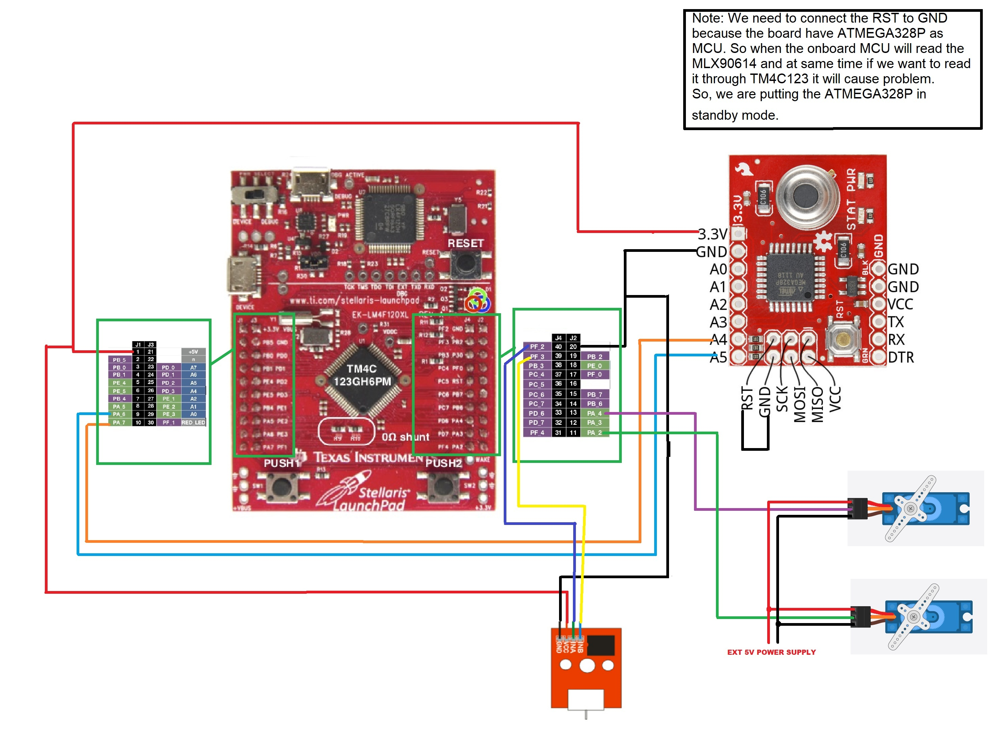

Objective:
The Heat-Triggered Fan project aims to enhance environmental comfort and energy efficiency through automated, responsive cooling based on ambient temperature readings.
Description:
This advanced system leverages sensor fusion technology to accurately monitor environmental conditions. Utilizing a combination of sensors communicating over I2C and UART interfaces, the system ensures precise temperature detection. When the ambient temperature exceeds a set threshold, the system activates a fan, efficiently mitigating heat without human intervention.
Sensor Fusion:
Employs multiple sensors via I2C and UART protocols for accurate temperature readings and reliable system performance.
Automatic Activation: The fan is triggered automatically at a specific temperature threshold, maintaining consistent climate control.
Energy Efficient: Operates the fan only when necessary, significantly reducing energy use.
User-Friendly Interface: Allows users to easily adjust temperature thresholds and fan speeds according to their preferences.
Functionality: At the core of the system is a microcontroller unit (MCU) that orchestrates all operations. It processes inputs from digital thermostats connected through I2C and additional sensors interfaced via UART. This dual communication strategy enhances the reliability and accuracy of the temperature readings, forming a solid basis for the activation logic of the fan.
Features
Enhanced Comfort: Automatically keeps indoor environments at a comfortable temperature.
Cost-Effective: Lowers energy bills by optimizing when and how the fan is used.
Environmentally Friendly: Improves energy efficiency, contributing to a lower carbon footprint.
Technical Innovation: Integrates sophisticated sensor and communication technologies to provide a cutting-edge solution to climate control.
Applications: This system is particularly suited for residential homes, offices, and industrial settings where maintaining a set temperature efficiently is crucial.
Conclusion:
The Heat-Triggered Fan project represents a significant advancement in smart climate control technologies. By integrating precise sensor fusion with sophisticated MCU management over I2C and UART interfaces, it delivers a highly effective, energy-efficient cooling solution that enhances both comfort and environmental sustainability.
Code
main.c
//Oscar Barajas
//Sensor Fusion Project
//Tiva Board Integration with Thermal Sensor I2C
#include "TM4C123GH6PM.h"
#include "stint.h"
#include "string.h"
void Delay_MicroSecond(int time); // generates delay in microseconds
void Servo_write(int pin, int angle);
void Servo_Init( void );
static int I2C1_wait_till_done(void);
void I2C1_Init ( void );
int I2C1_Write_Multiple(int slave_address, char slave_memory_address, int bytes_count, uint8_t * data);
int I2C1_read_Multiple(uint8_t slave_address, char slave_memory_address, int bytes_count, uint8_t * data);
long map(long x, long in_min, long in_max, long out_min, long out_max) ;
void Delay_MicroSecond(int time);
/*UART function prototypes*/
void UART0_Init( void );
char UART0_Receive( void );
void UART0_Transmit(unsigned char data);
void printstring(char *str);
/*Delay Function*/
uint32_t ms;
/*Switch Init*/
void Switches_Init();
void _delay_ms(uint16_t delay){
ms = 0;
while(delay > ms);
}
/*MLX90614 Functions and Variable declarations*/
#define MLX90614_I2CADDR 0x5A
// RAM
#define MLX90614_RAWIR1 0x04
#define MLX90614_RAWIR2 0x05
#define MLX90614_TA 0x06
#define MLX90614_TOBJ1 0x07
#define MLX90614_TOBJ2 0x08
double readObjectTempC( void );
double readTemp(uint8_t reg);
uint16_t read16(uint8_t reg);
static double tempC, tempF;
static char c[50];
#define IN_A 2
#define IN_B 3
#define THRESH 30 //you can change temperature threshold here
#define SERVO1 3
#define SERVO2 4
int fanState = 0;
void forward(){
GPIOF->DATA |= (1 << IN_A) | (0 << IN_B);
fanState = 1;
}
void reverse(){
GPIOF->DATA |= (0 << IN_A) | (1 << IN_B);
fanState = 2;
}
void stopFan(){
GPIOF->DATA |= (0 << IN_A) | (0 << IN_B);
fanState = 0;
}
void Fan_Motor_Init(){
SYSCTL->RCGCGPIO |= 0x20;
GPIOF->LOCK = 0x4C4F434B; // unlockGPIOCR register
GPIOF->CR = 0x01;
GPIOF->DIR |= ((1<<IN_A) | (1<<IN_B));
GPIOF->DEN |= ((1< THRESH){
if(fanState != 1){
printstring("Temp > THRESH");
forward();
}
}else{
if(fanState > 0){
printstring("Stop Fan");
stopFan();
}
}
}
int main(void)
{
UART0_Init();
Fan_Motor_Init();
I2C1_Init();
Servo_Init();
Servo_write(3, 180);
Servo_write(4, 0);
Delay_MicroSecond(2000000);
while(1)
{
int pa3_angle = 0;
int clockwise = 0;
for (pa3_angle = 180; pa3_angle >= 0; pa3_angle -= 10){
int pa4_angle = 0;
Servo_write(3, pa3_angle); //10 degrees y-axis
Delay_MicroSecond(100000);
//if(clockwise == 1){
//for (pa4_angle = 0; pa4_angle <= 180; pa4_angle += 10){
readTemp_FanOn();
Servo_write(4, 180);
Delay_MicroSecond(100000);
//}
//}else{
//for (pa4_angle = 180; pa4_angle >= 0; pa4_angle -= 10){
readTemp_FanOn();
Servo_write(4, 0);
Delay_MicroSecond(100000);
//}
//}
//clockwise = !clockwise;
//Delay_MicroSecond(100000);
}
Delay_MicroSecond(1000000);
Servo_write(3, 180);
Delay_MicroSecond(1000000);
/*
for (pa3_angle = 180; pa3_angle >= 0; pa3_angle -= 10){
int pa4_angle = 0;
Servo_write(3, pa3_angle);
Delay_MicroSecond(100000);
for (pa4_angle = 0; pa4_angle <= 180; pa4_angle += 10){
Servo_write(4, pa4_angle);
Delay_MicroSecond(100000);
}
//Delay_MicroSecond(100000);
for (pa4_angle = 180; pa4_angle >= 0; pa4_angle -= 10){
Servo_write(4, pa4_angle);
Delay_MicroSecond(100000);
}
}
Delay_MicroSecond(1000000);
*/
}
}
long map(long x, long in_min, long in_max, long out_min, long out_max) {
return (x - in_min) * (out_max - out_min) / (in_max - in_min) + out_min;
}
void Servo_write( int servo_pin, int angle ){
int i=0;
int d1 = map(angle, 0, 180, 1000, 2000);
int d2 = 20000 - d1;
if ( d2 == 0) { d2 = 1000;}
for(i=0; i<50; i++)
{
/* Given 10us trigger pulse */
GPIOA->DATA |= (1 << servo_pin); /* make control pin high */
Delay_MicroSecond(d1);
GPIOA->DATA &= ~(1 << servo_pin); /* make control pin low */
Delay_MicroSecond(d2);
}
}
void Servo_Init( void ) {
/* PA4 as a digital output signal to provide trigger signal */
SYSCTL->RCGCGPIO |= 1; /* enable clock to PORTA */
GPIOA->DIR |=(1<<4) | (1 << 3); /* set PA4, PA3 as a digial output pin */
GPIOA->DEN |=(1<<4) | (1 << 3); /* make PA4,PA3 as digital pin */
}
void Switches_Init(){
SYSCTL->RCGCGPIO |= (1<<5);
}
void UART0_Init( void ){
SYSCTL->RCGCUART |= 1; /* enable clock for UART0 */
SYSCTL->RCGCGPIO |= 0x01 ; /* enable clock for UART0 */
/*Systick Timer Initialization*/
SysTick->CTRL = 0x03;
SysTick->LOAD = 4000 - 1;
GPIOA->DEN = 0x03; /* set PA0 and PA1 as digital */
GPIOA->AFSEL = 0x03; /* Use PA0,PA1 alternate function */
GPIOA->AMSEL = 0; /* Turn off analg function*/
GPIOA->PCTL = 0x00000011; /* configure PA0 and PA1 for UART */
/* UART0 initialization */
UART0->CTL = 0; /* UART5 module disbable */
UART0->IBRD = 104; /* for 9600 baud rate, integer = 104 */
UART0->FBRD = 11; /* for 9600 baud rate, fractional = 11*/
UART0->LCRH = 0x60; /* data lenght 8-bit, not parity bit, no FIFO */
UART0->CC = 0; /* select system clock*/
UART0->CTL = 0x301; /* Enable UART5 module, Rx and Tx */
}
char UART0_Receive(void)
{
char data;
while((UART0->FR & (1<<4)) != 0){} /* wait until Rx buffer is not full */
data = UART0->DR ; /* before giving it another byte */
return (unsigned char) data;
}
void UART0_Transmit(unsigned char data)
{
while((UART0->FR & (1<<5)) != 0); /* wait until Tx buffer not full */
UART0->DR = data; /* before giving it another byte */
}
void printstring(char *str)
{
while(*str)
{
UART0_Transmit(*(str++));
}
}
void I2C1_Init( void ){
SYSCTL->RCGCGPIO |= 0x01 ; // Enable the clock for port A
SYSCTL->RCGCI2C |= 0x02 ; // Enable the clock for I2C 1
GPIOA->DEN |= ( 1 << 6 | 1 << 7); // Assert DEN for port A
// Configure Port A pins 6 and 7 as I2C1
GPIOA->AFSEL |= 0xc0 ;
GPIOA->PCTL |= 0x33000000 ;
GPIOA->ODR |= (1<<7) ; // SDA (PA7 ) pin as open darin
GPIOA->AMSEL &= ~( 1 << 6 | 1 << 7);
I2C1->MCR = 0x0010 ; // Enable I2C 3 master function
/* Configure I2C 3 clock frequency
(1 + TIME_PERIOD ) = SYS_CLK /(2*
( SCL_LP + SCL_HP ) * I2C_CLK_Freq )
TIME_PERIOD = 16 ,000 ,000/(2(6+4) *100000) - 1 = 7 */
I2C1->MTPR = 0x07 ;
}
/* wait untill I2C Master module is busy */
/* and if not busy and no error return 0 */
static int I2C1_wait_till_done(void)
{
while(I2C1->MCS & 1); /* wait until I2C master is not busy */
return I2C1->MCS & 0xE; /* return I2C error code, 0 if no error*/
}
int I2C1_Write_Multiple(int slave_address, char slave_memory_address, int bytes_count, uint8_t * data)
{
int error;
if (bytes_count <= 0)
return -1; /* no write was performed */
/* send slave address and starting address */
I2C1->MSA = slave_address << 1;
I2C1->MDR = slave_memory_address;
I2C1->MCS = 3; /* S-(saddr+w)-ACK-maddr-ACK */
error = I2C1_wait_till_done(); /* wait until write is complete */
if (error) return error;
/* send data one byte at a time */
while (bytes_count > 1)
{
I2C1->MDR = *data++; /* write the next byte */
I2C1->MCS = 1; /* -data-ACK- */
error = I2C1_wait_till_done();
if (error) return error;
bytes_count--;
}
/* send last byte and a STOP */
I2C1->MDR = *data++; /* write the last byte */
I2C1->MCS = 5; /* -data-ACK-P */
error = I2C1_wait_till_done();
while(I2C1->MCS & 0x40); /* wait until bus is not busy */
if (error) return error;
return 0; /* no error */
}
int I2C1_read_Multiple(uint8_t slave_address, char slave_memory_address, int bytes_count, uint8_t * data)
{
int error;
if (bytes_count <= 0)
return -1; /* no read was performed */
/* send slave address and starting address */
I2C1->MSA = slave_address << 1;
I2C1->MDR = slave_memory_address;
I2C1->MCS = 3; /* S-(saddr+w)-ACK-maddr-ACK */
error = I2C1_wait_till_done();
if (error)
return error;
/* to change bus from write to read, send restart with slave addr */
I2C1->MSA = (slave_address << 1) + 1; /* restart: -R-(saddr+r)-ACK */
if (bytes_count == 1) /* if last byte, don't ack */
I2C1->MCS = 7; /* -data-NACK-P */
else /* else ack */
I2C1->MCS = 0xB; /* -data-ACK- */
error = I2C1_wait_till_done();
if (error) return error;
*data++ = I2C1->MDR; /* store the data received */
if (--bytes_count == 0) /* if single byte read, done */
{
while(I2C1->MCS & 0x40); /* wait until bus is not busy */
return 0; /* no error */
}
/* read the rest of the bytes */
while (bytes_count > 1)
{
I2C1->MCS = 9; /* -data-ACK- */
error = I2C1_wait_till_done();
if (error) return error;
bytes_count--;
*data++ = I2C1->MDR; /* store data received */
}
I2C1->MCS = 5; /* -data-NACK-P */
error = I2C1_wait_till_done();
*data = I2C1->MDR; /* store data received */
while(I2C1->MCS & 0x40); /* wait until bus is not busy */
return 0; /* no error */
}
double readObjectTempC( void ){
return readTemp(MLX90614_TOBJ1);
}
double readTemp(uint8_t reg){
double temp;
temp = read16(reg);
if (temp <= 0){
return 0;
}
temp *= 0.02;
temp -= 273.15;
return temp;
}
uint16_t read16(uint8_t reg){
uint8_t buffer[2];
I2C1_read_Multiple(MLX90614_I2CADDR, reg, 2, buffer);
return (uint16_t)((buffer[0]) | (buffer[1] << 8));
}
void SysTick_Handler(){
ms++;
}
/* Create one microsecond second delay using Timer block 1 and sub timer A */
void Delay_MicroSecond(int time)
{
int i;
SYSCTL->RCGCTIMER |= 2; /* enable clock to Timer Block 1 */
TIMER1->CTL = 0; /* disable Timer before initialization */
TIMER1->CFG = 0x04; /* 16-bit option */
TIMER1->TAMR = 0x02; /* periodic mode and down-counter */
TIMER1->TAILR = 16 - 1; /* TimerA interval load value reg */
TIMER1->ICR = 0x1; /* clear the TimerA timeout flag */
TIMER1->CTL |= 0x01; /* enable Timer A after initialization */
for(i = 0; i < time; i++)
{
while ((TIMER1->RIS & 0x1) == 0) ; /* wait for TimerA timeout flag */
TIMER1->ICR = 0x1; /* clear the TimerA timeout flag */
}